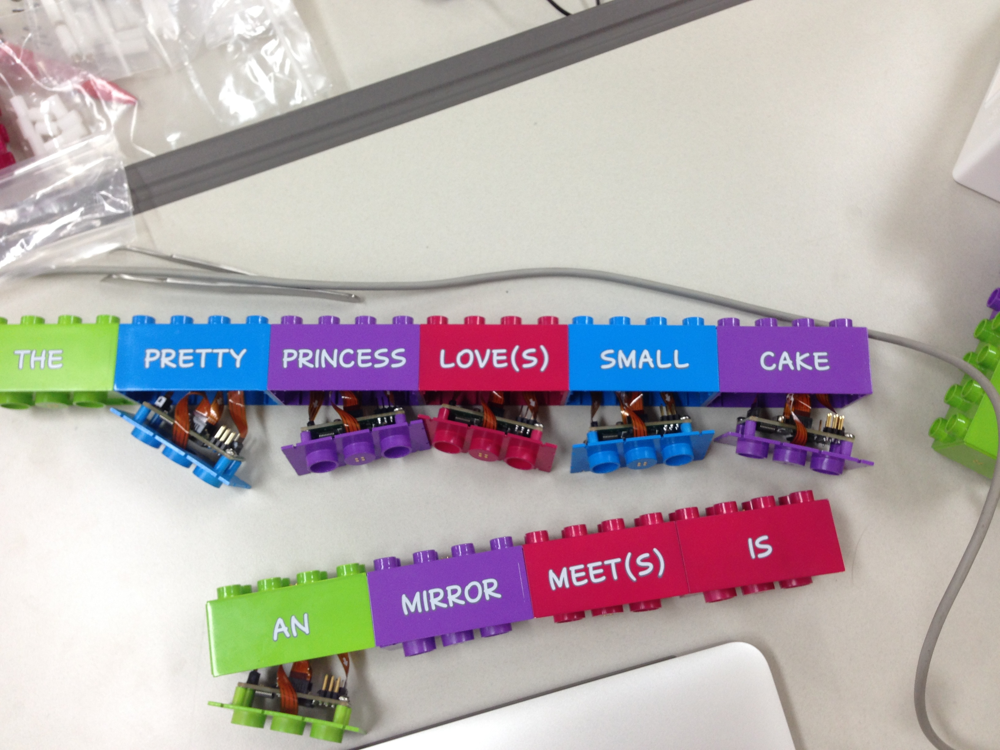
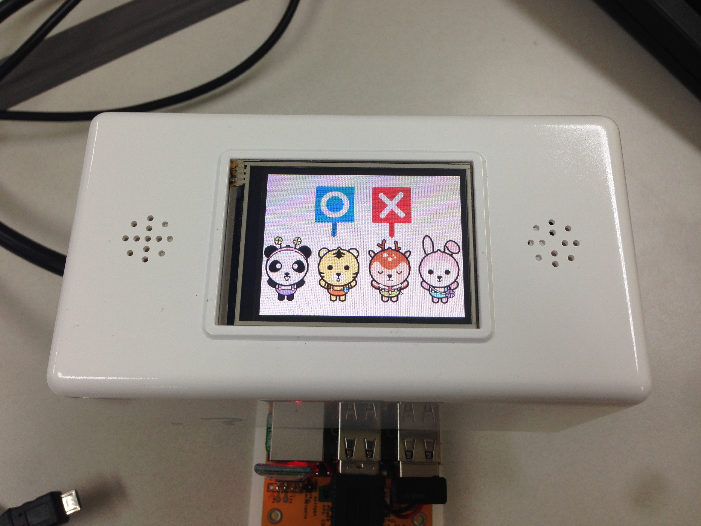
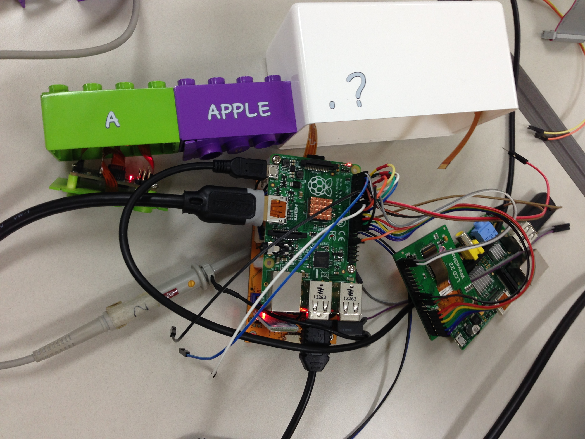
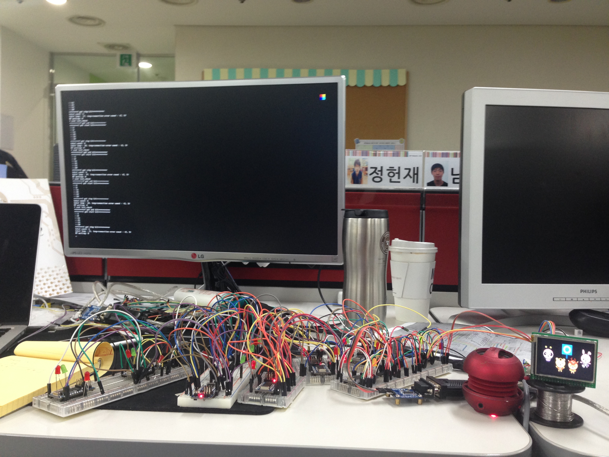
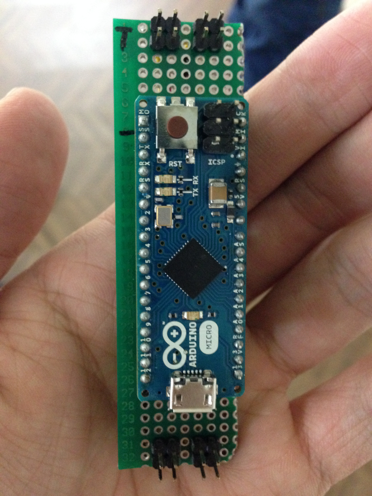
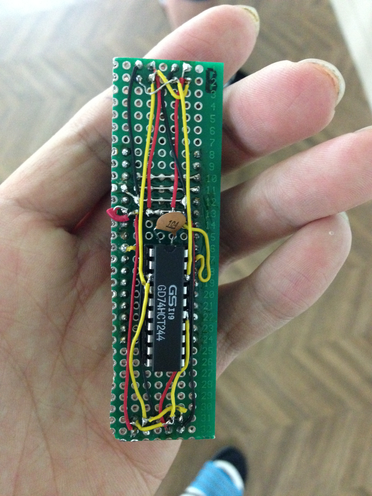
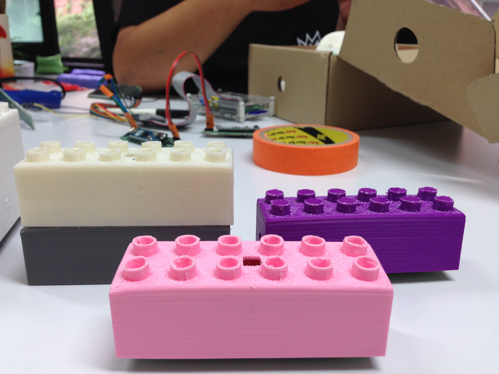
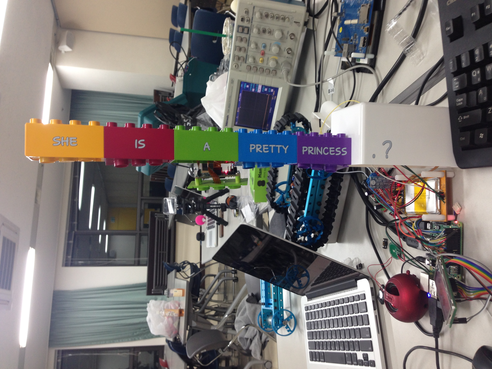
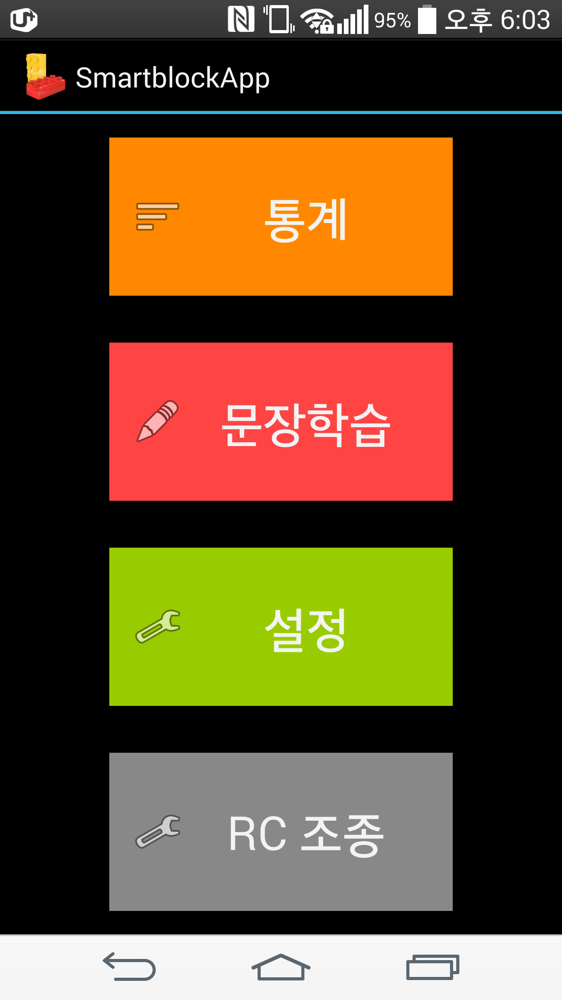
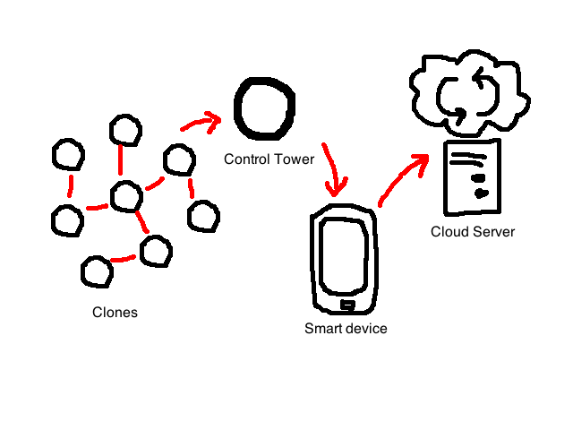

'스마트 블록'은 Software maestro(NIPA 주관) 5기 연수 과정의 첫 번째 프로젝트입니다. 유명환 멘토의 지도하에 4명이 팀(팀명 레전드5)을 이뤄 프로젝트를 진행했으며, 진행 기간은 3개월입니다. 이 아이디어는 사업을 하고자 하는 의뢰자에 의해 기획되었으며, (거의) 그 기획 의도대로 만들어졌습니다.
아이들이 놀이를 통해 자연스럽게 영어 문장을 학습할 수 있는 스마트 블록
스마트 블록은 놀이와 학습을 접목시킨 제품이다. 학습 만화가 놀이와 학습을 접목시킨 대표적인 예인데, 재미있는 학습 만화를 본 적이 있다면 그 기억이 인생에서 상당히 오랜 기간 지속되는 것을 경험해 본적이 있을 것이다.
-
스마트 블록은 크게 단어 블록(Data block)과 채점 블록(Control block)으로 나누어진다.
(1) 블록별로 각각 다른 단어가 적혀있는 단어 블록 
(2) 문장이 만들어지면 마지막으로 붙이는 채점 블록 
단어 블록에는 영어 단어들이 적혀있고, 아이들은 블록 양 옆과 위 아래 붙어있는 자석들을 이용해, 블록들을 손쉽게 떼어냈다 붙였다하며 영어 문장을 학습할 수 있다. 아이가 단어 블록들을 이용해 문장을 만들고 채점 블록에 붙이면, 채점 블록은 그 문장이 맞았는지 채점해준다.

-
작동원리
-
블록 간 통신은 모두 Tx, Rx 핀을 통한 UART 통신으로 이루어진다. 채점 블록은 단어 블록이 붙어있든 계속해서 신호('거기 누구 붙어있나요~?')를 보낸다. 단어 블록이 안 붙어있다면 계속 보내는거고, 붙어있으면 단어 블록(채점 블록과 붙어있는)으로 부터 응답('있어요! 잠시만요~')을 받게 된다.
-
신호를 받은 단어 블록은 응답을 해준 뒤, 마지막 블록에 도달할때까지 같은 신호('거기 누구 붙어있나요~?')를 전달한다. 마지막 블록 역시 신호('거기 누구 붙어있나요~?')를 전달하지만, 응답을 받지 못한다. 응답을 받지 못했기때문에, 자신을 마지막 블록이라고 간주하고 자신의 ID를 큐(Queue)에 담아 채점 블록 쪽으로 전달한다. 기다리고 있는 단어 블록들 역시 자신의 ID를 추가로 큐(Queue)에 담아 채점 블록 쪽 으로 전달한다.
-
채점 블록은 단어 블록들의 ID가 들어있는 큐(Queue)를 받았고, ID에 해당하는 단어가 무엇인지 미리 저장해둔 Table(ID-Word matching table)에서 찾아온다. 단어들을 찾아와 큐(Queue)에서 꺼낸 순서대로 문장을 만든다.
-
만들어진 문장은 link-grammer(grammer check open source developed by CMU)라는 오픈 소스를 통해, 맞는 문장인지 아닌지 채점되고 그 결과를 소리와 화면을 통해 알려준다.
-
-
개발과정
처음에 다른 프로젝트도 할 수 있었지만, 이 프로젝트를 선택했던 이유는 여러 가지 상황을 종합적(자금, 멘토의 시간 활용, 하드웨어 전문가 투입, 난이도 등)으로 판단했을때 가장 현실적이었고, 무엇보다 (사업 의지를 가지고 계신 분의 의뢰에 의해 만들기에) 빵판에서부터 실제 시장에 나갈 제품이 어떻게 탄생하는지 경험해 볼 수 있을거라 생각했기 때문이다.
(1) 빵판부터... 
(2) 1차 목업   
(3) 2차 목업 
-
개선 방향 및 확장가능성
(1) 앱
지금도 앱이 있긴하다! 현재 동작하는 기능은 (1)통계와 (2)RC 조정이다. 통계 버튼을 누르면 채점 블록과 블루투스 페어링되어, 채점 블록이 현재까지 채점한 학습 데이터를 앱으로 가져오게된다. 그리고 맞은 개수가 일정 수준 이상이면 아이에게 보상으로 RC카 조정을 하게 해준다. 딱 여기까지다. 사실 지금의 수준은 개인적으로는 굉장히 아쉬운 부분이다. 프로젝트 기간이 더 길고, 의뢰자와 이야기가 된다면 바꾸고 싶은 부분이 많이 남아있다. 아이가 문장을 만드는데 어떤 부분에서 어려움을 느끼는지, 그리고 서버에 그 데이터들을 모아 나이대별로 어떤 문장을 구사하는지 등이다.

(2) 다른 아이디어로의 확장
사실 개인적으로 이 프로젝트를 했던 또 다른 이유를 찾으라면, 써먹는 기술 구조를 가지고 다른 아이디어로의 확장이 가능해보였기 때문이다. 물론 의뢰자 사업 분야(교육용 완구)는 아니다. 그냥 많은 IoT 제품들이 이러한(아래 그림과 같은) 추상화 구조를 가진다. 
스마트 폰이 보급화되면서, 스마트 폰 주변기기도 확장되고 있다. 스마트 폰의 주변기기는 스마트 폰이 만족시키지 못하는 감각을 확장시켜주는 역할(비콘은 결국 스마트폰의 촉각을 더 확장시켜주는 셈)을 한다. 그림에서 clones들은 그 감각을 확장시켜주는 세포들이고, control tower는 clones들과 스마트 폰 사이를 연결시켜주는 통로(원거리 통신 담당), 그리고 서버는 사용자들의 스마트 폰에서 받아온 데이터를 받아서 분석하는 곳이 된다. 이번 프로젝트로 인해, 어느 정도 간략한 그림은 잡을 수 있게 된 것 같아 다행이다.